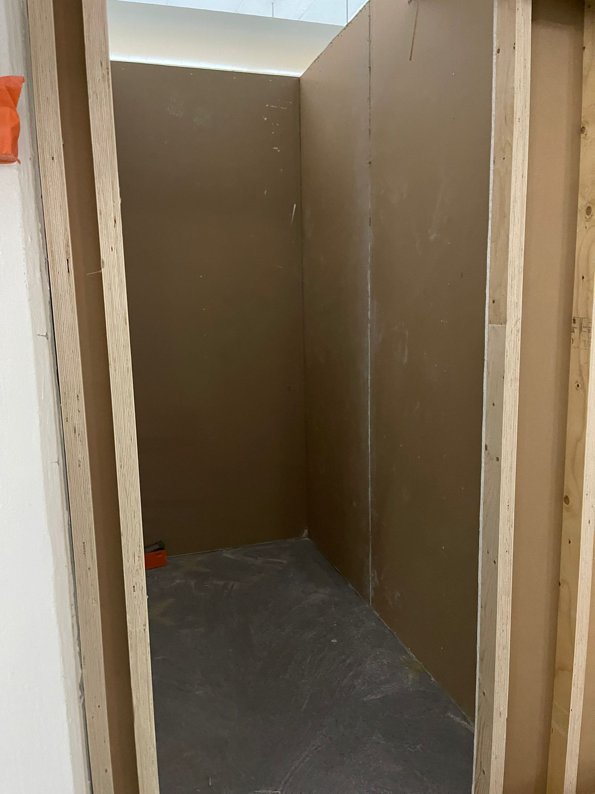
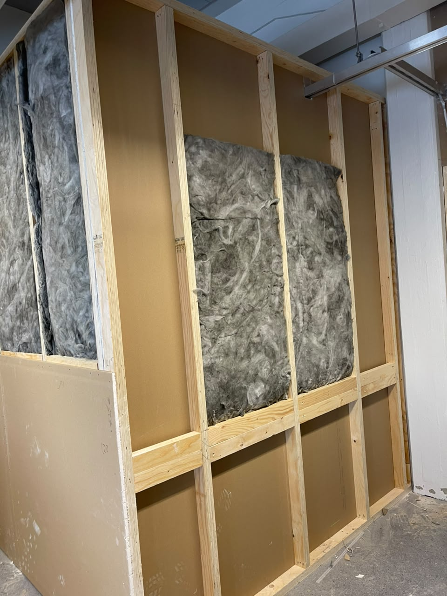
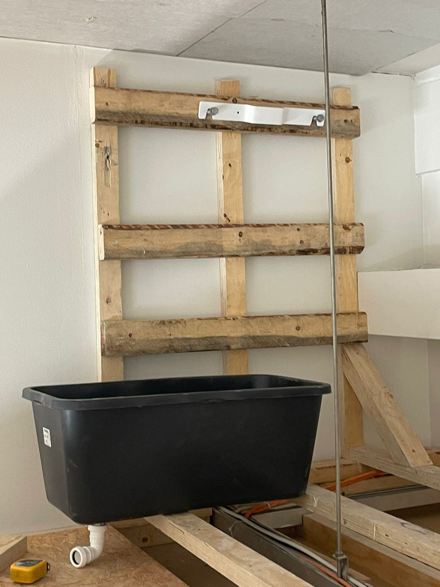
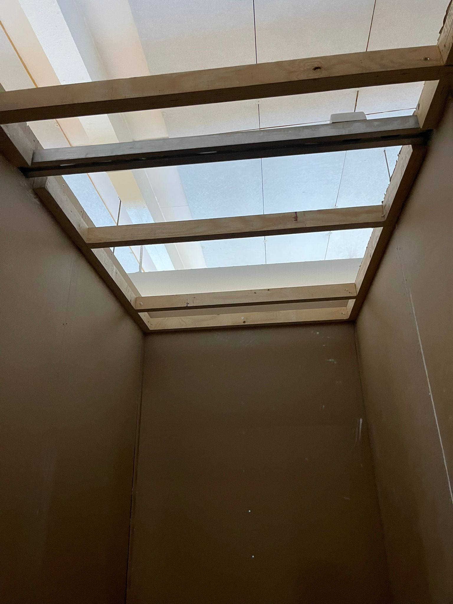
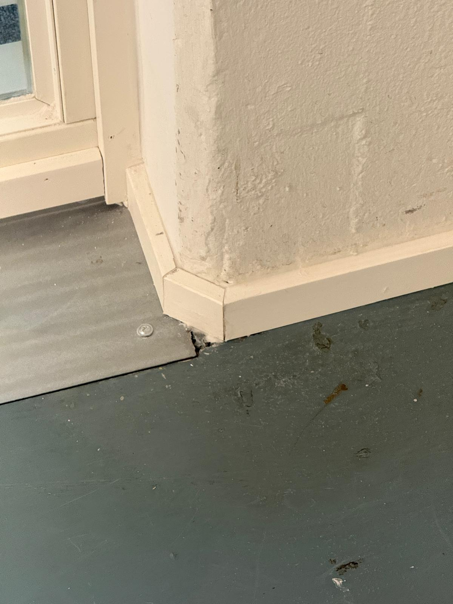
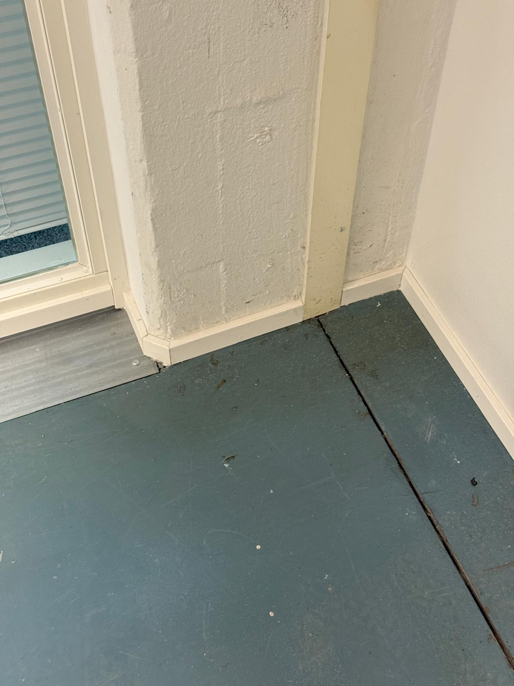
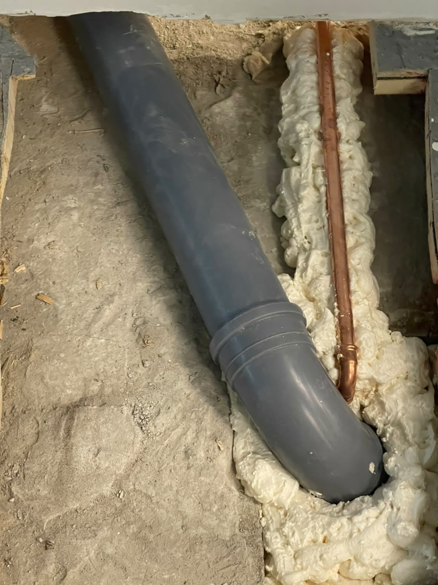
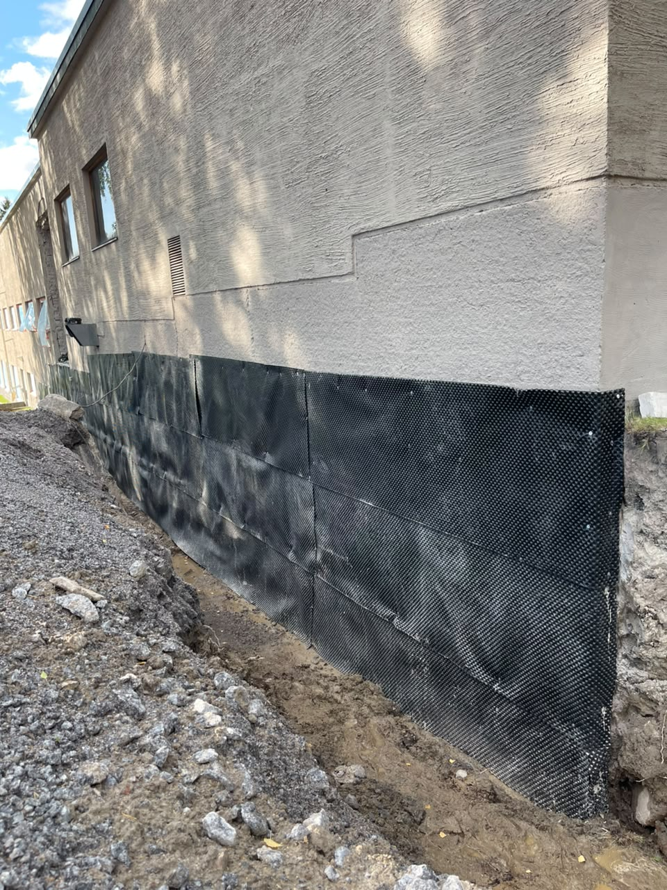
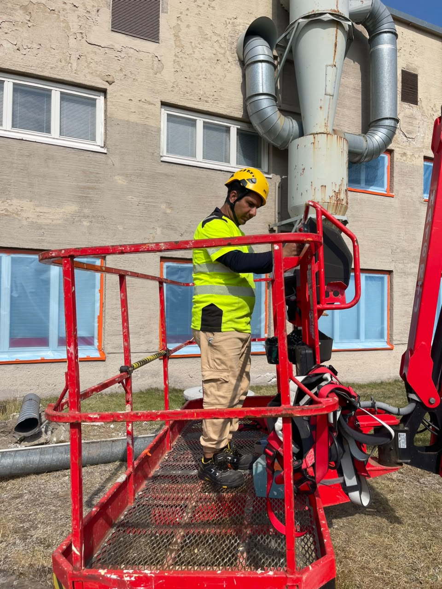
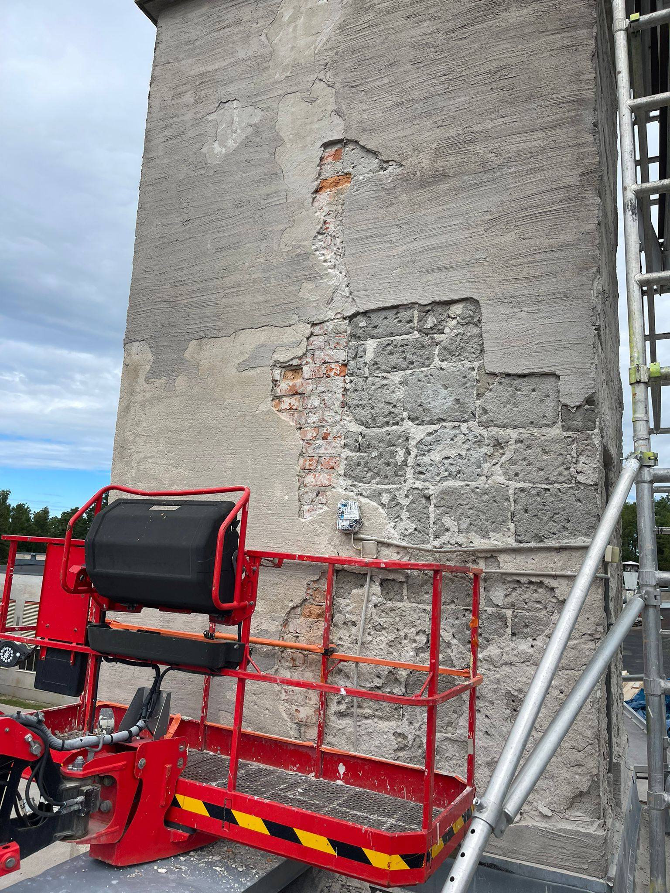

07/2026—08/2026
Rakennustyöntekijä
ABB:n saneerausprojekti · Strömberg Park
CF Cleaning Oy · Toimeksianto: Kvadraten Ab
Olen motivoitunut rakennustyöntekijä, jolla on kokemusta purku-, rakennus- ja viimeistelytöistä. Työskentelen huolellisesti sekä itsenäisesti että osana työryhmää ja opin uudet tehtävät nopeasti.
Strömberg Park, Vaasa
07–08 / 2026
Työskentelin CF Cleaning Oy:n työntekijänä Kvadraten Ab:n toimeksiannossa. Tehtäviini kuului puurakenteita, eristystä, levytystä, viimeistelyä sekä sisä- ja ulkopuolisia saneeraustöitä.
Jokainen kuva esittelee eri työvaiheen tai toteutetun yksityiskohdan projektista.

Asensin kipsilevyt rakennettuun puurunkoon ja valmistelin seinärakenteen seuraavaa työvaihetta varten.

Rakensin puisen seinärungon sekä sovitin ja asensin eristeet runkotolppien väliin.

Suunnittelin, rakensin ja kiinnitin puisen tukirakenteen noin 85 kg painavalle lämminvesivaraajalle.

Mittasin ja rakensin WC-tilaan puisen rungon alaslaskettua kattoa varten.

Mittasin ja leikkasin jalkalistat tarkasti pylvään sekä epäsäännöllisten kulmien ympärille.

Kiinnitin ja viimeistelin listat siististi huoneen seinälinjojen mukaisesti.

Tiivistin putkiläpiviennin polyuretaanivaahdolla ennen pinnan lopullista viimeistelyä.

Asensin sokkelin kosteudeneristyslevyt ulkoseinän suojaksi ennen täyttö- ja viimeistelytöitä.

Tein rakennuksen ulkopuolisia saneeraus- ja valmistelutöitä henkilönostimelta turvallisuusohjeita noudattaen.

Osallistuin vanhan julkisivupinnan purkuun sekä korjattavan alueen puhdistukseen ja valmisteluun.
ABB:n saneerausprojekti · Strömberg Park
CF Cleaning Oy · Toimeksianto: Kvadraten Ab
Yksityiset rakennus- ja remonttiprojektit
Asuntojen rakennus-, puu-, purku-, maalaus-, korjaus- ja viimeistelytyöt pienessä työryhmässä, Teheran.
Voimassa oleva työturvallisuuskortti, Valttikortti ja rekisteröity veronumero sekä B-ajokortti.
Suomi: perustaso · Englanti: hyvä · Persia: äidinkieli